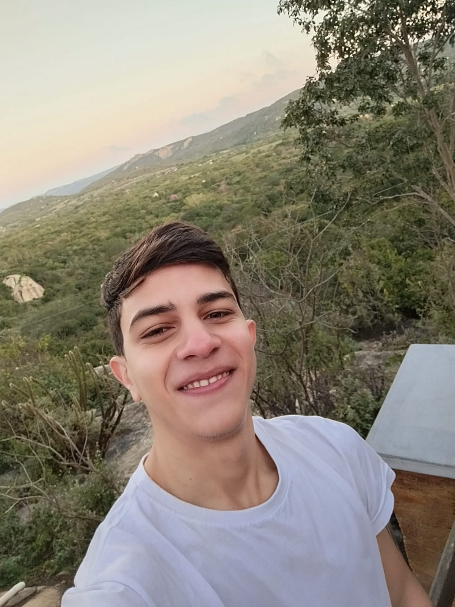
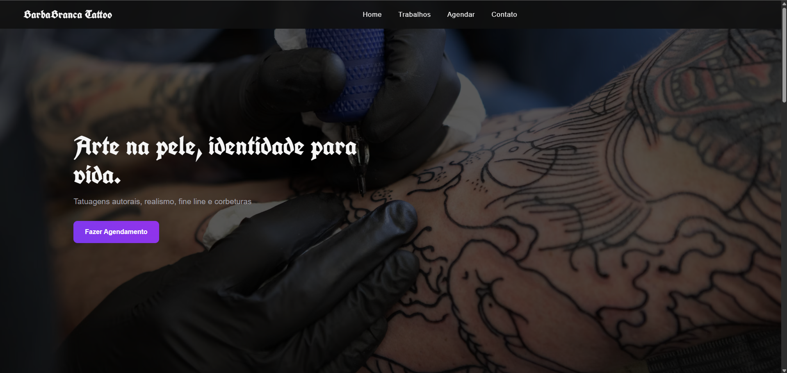
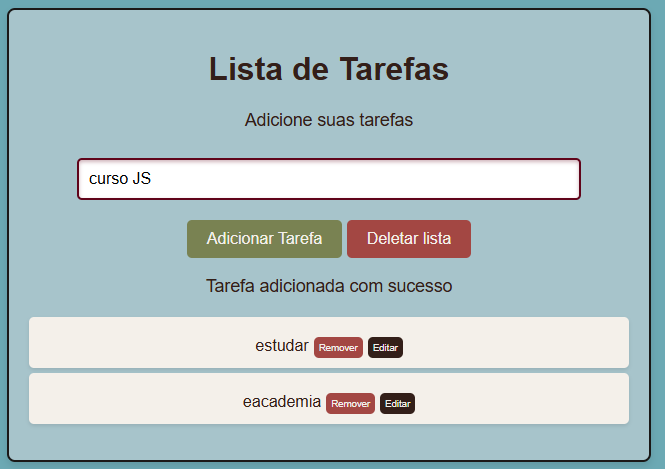
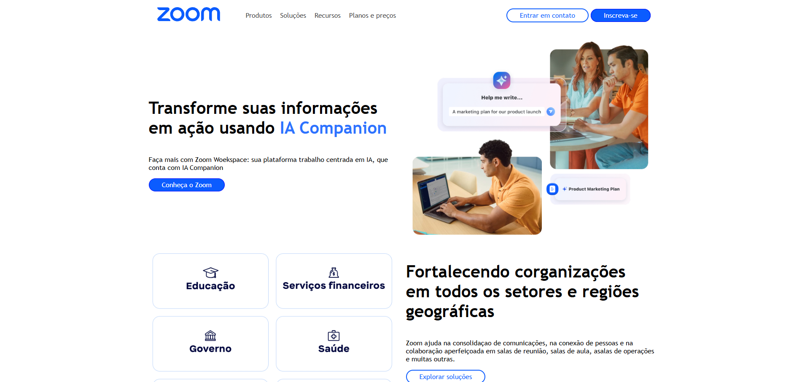
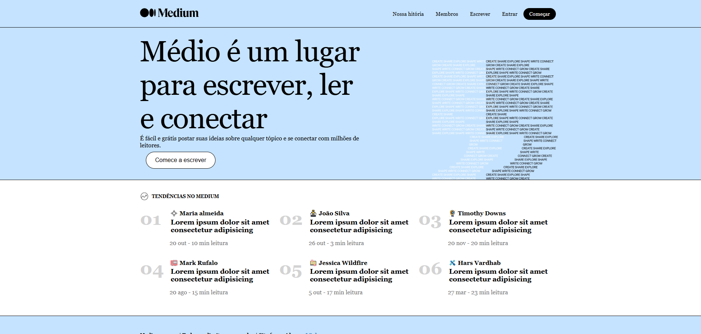
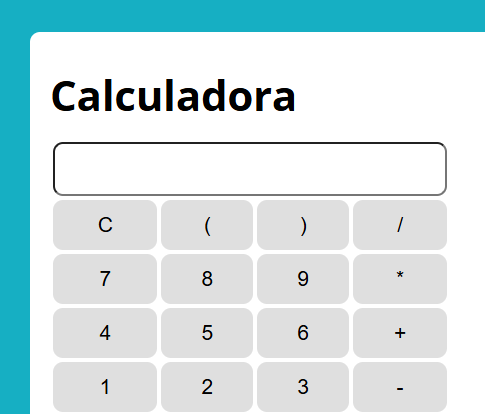

Lucas Soares
Desenvolvedor em Formação

Desenvolvedor em Formação
Sou Lucas Soares, 25 anos, estudante de Ciência da Computação (3º semestre). Tenho experiência no setor varejista (Atacadão), onde desenvolvi habilidades de organização, comunicação e trabalho em equipe. Estou em busca da minha primeira oportunidade em TI, com foco em desenvolvimento e suporte técnico. Atualmente estudo e prático HTML, CSS e JavaScript, além de lógica de programação, estou sempre em constante aprendizado e aberto a novos desafios.

Meu primeiro site institucional e "profissional" desenvolvido para um tatuador freelancer, criado para substituir o Instagram como principal canal de divulgação. Conta com galeria de trabalhos filtrável por estilo (realismo, traço fino e coberturas), formulário de agendamento que gera uma mensagem formatada direto pro WhatsApp, e página de contato com mapa integrado. Totalmente responsivo, construído com HTML, CSS e JavaScript puro.

Projeto de lista de tarefas desenvolvido com HTML, CSS e JavaScript. Neste projeto pratiquei manipulação do DOM, eventos, arrays e lógica de programação, criando funcionalidades para adicionar, remover e organizar tarefas de forma dinâmica.

Landing page inspirada no site oficial do Zoom, desenvolvida como exercício prático do curso de CSS, com foco em layout responsivo utilizando CSS Grid e Flexbox. Objetivo Praticar a construção de um layout real combinando Grid (para a estrutura geral da página, usando grid-template-areas) com Flexbox (para o cabeçalho, menu e organização interna dos blocos de conteúdo). Tecnologias utilizadas HTML5 CSS3 (Grid Layout, Flexbox, Media Queries) Responsividade O layout se adapta para telas menores (mobile), reorganizando a grade de duas colunas para uma única coluna e ajustando o cabeçalho e menu de navegação.

Réplica da tela inicial do Medium, desenvolvida como projeto de estudo para praticar estruturação de páginas com HTML5 e estilização com CSS3. Objetivo Projeto criado para treinar: Estruturação semântica de página com HTML Estilização e layout com CSS puro (sem frameworks) Reprodução fiel de um design real, exercitando atenção a detalhes visuais Tecnologias utilizadas HTML5 CSS3 Aprendizes Esse projeto ajudou a fixar conceitos de: Organização de layout com CSS Boas práticas de estruturação HTML Fidelidade visual a um design de referência

Mini projeto de calculadora desenvolvido com HTML, CSS e JavaScript. Durante o desenvolvimento pratiquei lógica de programação, manipulação do DOM, eventos e operações matemáticas básicas, além de trabalhar na organização do código e na interação com o usuário.